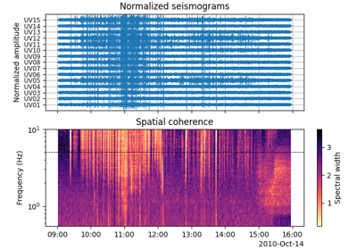
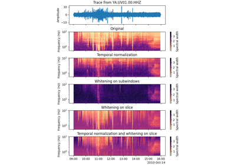
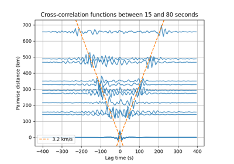

Gallery#
Traces synchronization
Temporal normalization
Spectral whitening

Spectral width

Compare pre-processing

Cross-correlation at USArray
Constant velocity travel times
Constant velocity travel times
Constant velocity differential times
Constant velocity differential times
Locating events within a constant velocity model
Locating events within a constant velocity model